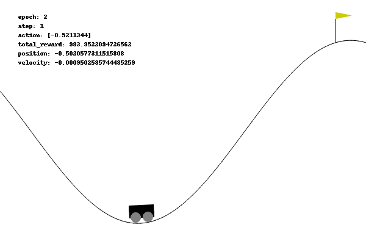
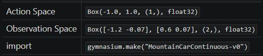
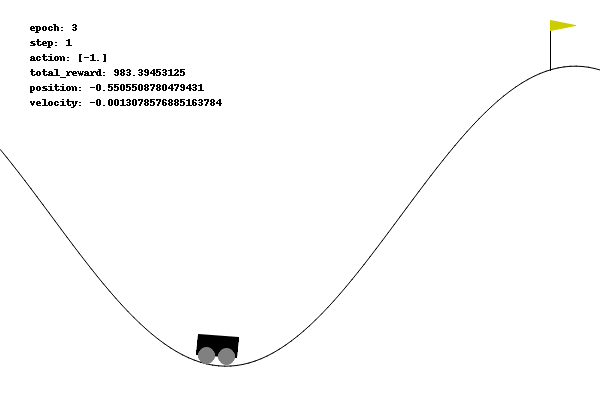

0x00 问题描述
Mountain Car Continuous 与 Mountain Car 是一样的题型，区别在于 Mountain Car Continuous 的动作空间是连续的，而 DQN 算法也不再适用于连续动作问题。

0x10 问题解读
从 Mountain Car Continuous 页面的描述中，可以得到以下信息：
0x11 环境说明

首先看到这个这个表，它的含义是：
- 在 python 通过以下语句可以创建 MountainCarContinuous（版本 v0）的预设环境：
import gymnasiumenv = gymnasium.make("MountainCarContinuous-v0")
- 而在这个预设环境中：
- 执行
env.action_space可以得到动作空间（Action Space）为Box(-1.0, 1.0, (1,), float32) - 执行
env.observation_space可以得到观测空间（Observation Space）为Box([-1.2 -0.07], [0.6 0.07], (2,), float32)
- 执行
0x12 动作空间
文档中给出的动作空间为 [-1.0, 1.0] 的连续空间，表示施加在小车上的力，正值表示向着目标的方向、负值表示背向目标的方向。
这是目前为止首次遇到的连续动作空间问题，之前使用的 DQN 算法并不适用此问题，因此下文会换一种解题方法
0x13 观测空间
观测空间与 Mountain Car 是一样的，observation_space 的 2 个独立的观察值分别代表：
- 0: Cart Position： 小车位置，即 x 坐标轴的范围
- 1: Cart Velocity： 小车速度
0x14 奖励
目标是尽快到达右侧山顶的旗帜，因此在结束回合前，它的每一步都会受到惩罚值、只有当到达旗帜时才会收到 +100 的奖励值。
可以不用关注默认的奖励，因为默认的奖励方案并不适用；需要按照 Mountain Car 的奖励方案重新设计
0x15 初始状态
初始状态中，小车位置为 [-0.6, -0.4] 之间的随机值，小车速度总是为 0。
0x16 回合终止
如果发生以下情况之一，则回合终止：
- 终止： 小车位置
>= 0.45（到达右侧山顶的旗帜） - 中止： 回合步数大于 999
训练时不建议使用 999，因为事实上 200 步以内已经可以完成，999 不但训练慢、还可能会导致过度训练。
0x20 解题过程
但是前面已经提过， DQN 算法并不适用连续动作空间的问题：
这是因为在 DQN 中、智能体可以在给定有限的离散空间中选择一个动作，然后学习一个动作价值函数（Q 函数），为每个状态-动作对赋予一个价值，通过比较和优化有限的动作产生的 Q 值、指导智能体做出决策。
但在连续动作空间中，动作的可能性是无限的，这使得直接使用 DQN 进行动作选择变得不可行。对于连续动作空间，需要一种能够生成连续动作值的方法，而不是从预先定义的动作集合中选择。
0x21 算法选型
早在 Acrobot 的笔记中我们就提到过，基于贪婪策略的 Q-learning 系列算法中，针对 “离散” 和 “连续” 的问题有不同的适用算法：
| 状态空间 | 动作空间 | 算法 | 备注 |
|---|---|---|---|
| 离散 | 离散 | Q-learning | 基础算法，使用 Q-table 存储每种状态动作所对应的 Q 值估计 |
| 连续 | 离散 | DQN | 为了处理高维的连续状态空间，使用深度神经网络近似处理 Q-table |
| 连续 | 连续 | DDPG | 结合了策略梯度方法和 Q-learning 的思想，使用 Actor-Critic 框架：其中 Actor 负责生成动作，Critic 评估这些动作 |
| 连续 | 连续 | TD3 | 引入双 Q 学习和延迟策略更新，解决 DDPG 中过估计动作值的问题 |
在这里我选择了 TD3 算法。
0x22 构建 Actor 网络模型
Actor 负责生成动作，其代码为：
class Actor(nn.Module):
def __init__(self, obs_size, action_size, max_action):
super(Actor, self).__init__()
self.layer1 = nn.Linear(obs_size, 400)
self.layer2 = nn.Linear(400, 300)
self.layer3 = nn.Linear(300, action_size)
self.max_action = max_action
def forward(self, x):
x = F.relu(self.layer1(x))
x = F.relu(self.layer2(x))
x = self.max_action * torch.tanh(self.layer3(x))
return x比对之前的训练代码可知，Actor 的神经网络模型和 DQN 的神经网络模型几乎毫无差别：
- 网络模型输入为状态张量 obs_size，输出为动作张量 action_size
- 唯一的区别是前向传播函数 forward 的最后一步做了从“离散”映射到“连续”的处理
forward 的最后一步很关键：
- 通过 tanh 函数把网络输出的离散值归一化，落在
[-1, 1]的标准区间 - 然后乘以实际动作空间的上限值 max_action，把标准区间映射回去实际的动作区间
tanh 对应数学上三角函数的 tan
0x23 构建 Critic 网络模型
Critic 评估 Actor 所生成的动作，其代码为：
class Critic(nn.Module):
def __init__(self, obs_size, act_size):
super(Critic, self).__init__()
# 第一个 Critic 网络
self.layer1 = nn.Linear(obs_size + act_size, 400)
self.layer2 = nn.Linear(400, 300)
self.layer3 = nn.Linear(300, 1)
# 第二个 Critic 网络
self.layer4 = nn.Linear(obs_size + act_size, 400)
self.layer5 = nn.Linear(400, 300)
self.layer6 = nn.Linear(300, 1)
# x: obs_batch 批量的状态张量，形状为 [batch_size, obs_size]， 如 32x2
# u: act_batch 批量的动作张量，形状为 [batch_size, act_size]， 如 32x1
# “批量”指从【经验回放存储】中每次所取出用于 TD3 学习的经验数量
def forward(self, x, u) :
# 表示把两个张量的第 1 维拼接在一起形成一个新的张量
# 即 xu = [ obs_size + act_size ]
xu = torch.cat([x, u], 1)
# 第一个 Critic 网络的前向传播
x1 = F.relu(self.layer1(xu))
x1 = F.relu(self.layer2(x1))
q1 = self.layer3(x1)
# 第二个 Critic 网络的前向传播
x2 = F.relu(self.layer4(xu))
x2 = F.relu(self.layer5(x2))
q2 = self.layer6(x2)
return q1, q2
# 使用 Q1 网络更新 Actor 的 Q 值估计
def Q1(self, x, u):
xu = torch.cat([x, u], 1)
x1 = F.relu(self.layer1(xu))
x1 = F.relu(self.layer2(x1))
q1 = self.layer3(x1)
return q1在 TD3 算法中，Critic 模型中实际定义了两个网络。
这两个网络结构完全相同，但是它们各自独立地学习和更新，以便为同一“状态-动作对”提供两个略有不同的价值估计，其作用是：
- 减少过度估计：采用两个网络的最小值作为目标 Q 值，减少 Q 值的过度估计倾向（过度估计会导致策略评估不准确、影响学习性能）
- 提高稳定性：两个独立的价值估计可以增加学习过程的稳定性（防止算法过于依赖于某个可能不准确的单一价值估计）
在这个问题中，obs_size 即观测空间的状态数量，即小车的位置和速度、共 2 个状态； act_size 即动作空间的动作数量，即施加在小车上的力、共 1 个动作。
nn.Linear(obs_size + act_size, 400) 表示 Critic 网络串接了状态和动作（2 + 1 = 3）、第一层网络形状为 3 x 400，即接受输入的张量形状为 k x 3。
nn.Linear(300, 1) 表示最后一层网络形状为 300 x 1、即会输出 1 个评估值，就是对 k x 3 的 Q 价值评估。
0x24 动作噪音
在 TD3 算法中，选择下一步动作 action 后，需要为其添加噪音以平滑目标策略：
def add_noise(targs: TrainArgs, action, noise) :
'''
为 action 添加噪音：TD3 通过在选取的动作上添加噪声来平滑目标策略
:params: targs 用于训练的环境和模型关键参数
:params: action 动作张量 array or tensor
:params: noise 噪音张量 array or tensor
:return: 添加噪音的动作张量 tensor （维度和形状 与 action和noise 一致）
'''
min_action = torch.tensor(targs.env.action_space.low, device=targs.device, dtype=torch.float)
max_action = torch.tensor(targs.env.action_space.high, device=targs.device, dtype=torch.float)
action = (action + noise).clip(min_action, max_action) # 确保 action + noise 依然在动作空间的取值范围内
return action通过添加噪声，TD3 能更有效地探索环境，避免过早收敛到局部最优，保持策略的泛化能力。
通俗来说，就是使得智能体对输入的小变化不那么敏感，从而提高学习过程的稳定性。
前期在 Actor 上加以一定噪声可以鼓励对环境探索，但噪声对于训练后期算法的收敛是不利的。随着训练的进行逐步减小噪声是一个不错的选择。
0x25 TD3 算法
和 DQN 类似，在结束训练的每个回合后，TD3 都需要从经验回放存储中抽取一批历史样本进行学习：
def td3(targs: TrainArgs, total_loss, step_counter) :
'''
进行 TD3 学习（基于 Q 值的强化学习方法）：
这个过程是 TD3 学习算法的核心，它利用从环境中收集的经验来不断调整和优化网络，使得预测的 Q 值尽可能接近实际的 Q 值。
通过迭代这个过程，使得神经网络逐渐学习到一个策略，该策略可以最大化累积奖励。
:params: targs 用于训练的环境和模型关键参数
:params: action 下一步动作
:params: total_loss 累积损失
:params: step_counter 步数计数器
:return: 执行动作后观测空间返回的状态
'''
# 确保只有当【经验回放存储】中的样本数量超过批处理大小时，才进行学习过程
# 这是为了确保有足够的样本来进行有效的批量学习
if len(targs.memory) <= targs.batch_size :
return total_loss
# ===============================
# 准备批量数据
# ===============================
# 从【经验回放存储】中随机抽取 batch_size 个样本数
# 这种随机抽样是为了减少样本间的相关性，增强学习的稳定性和效率
transitions = random.sample(targs.memory, targs.batch_size)
# 解压 transitions 到单独的批次
batch = Transition(*zip(*transitions))
# 将每个样本的组成部分 (obs, action, reward, next_obs, done) ，拆分转换为独立的批次
obs_batch = down_dim(torch.stack(batch.obs).to(targs.device))
act_batch = torch.tensor(np.array(batch.action), dtype=torch.float, device=targs.device)
reward_batch = up_dim(torch.tensor(batch.reward, dtype=torch.float, device=targs.device))
next_obs_batch = down_dim(torch.stack(batch.next_obs).to(targs.device))
done_batch = up_dim(torch.tensor(batch.done, dtype=torch.float, device=targs.device))
# print(f"obs_batch: {obs_batch}") # tensor 32x2
# print(f"act_batch: {act_batch}") # tensor 32x1
# print(f"reward_batch: {reward_batch}") # tensor 32x1
# print(f"next_obs_batch: {next_obs_batch}") # tensor 32x2
# print(f"done_batch: {done_batch}") # tensor 32x1
# ===============================
# 更新 Critic 网络
# ===============================
# 计算下一个状态的最大预测 Q 值
with torch.no_grad():
next_act_batch = targs.target_actor_model(next_obs_batch) # tensor 32x1
noise_batch = (torch.randn_like(next_act_batch) * targs.noise).clip(-targs.noise_limit, targs.noise_limit)
next_act_batch = add_noise(targs, next_act_batch, noise_batch) # tensor 32x1
# next_obs_batch 必须形状 tensor 32x2
# next_act_batch 必须形状 tensor 32x1
target_Q1, target_Q2 = targs.target_critic_model(next_obs_batch, next_act_batch)
target_Q = torch.min(target_Q1, target_Q2)
target_Q_values = reward_batch + (1 - done_batch) * targs.gamma * target_Q
# 获得当前状态下的 Q 值（对当前状态的观测进行前向传播的结果，用于计算损失）
# obs_batch 必须形状 tensor 32x2
# act_batch 必须形状 tensor 32x1
current_Q1, current_Q2 = targs.critic_model(obs_batch, act_batch)
critic_loss = F.mse_loss(current_Q1, target_Q_values) + F.mse_loss(current_Q2, target_Q_values)
total_loss += critic_loss.item() # 更新累积损失
optimize_params(targs.critic_model, targs.critic_optimizer, critic_loss) # 参数优化
# ===============================
# 延迟更新 Actor 网络
# ===============================
# 在 TD3 中，Actor 网络的更新频率较低（例如，每 2 次 Critic 更新后更新一次 Actor），以减少策略的方差。
if step_counter % targs.update_action_every == 0 :
actor_loss = -targs.critic_model.Q1(obs_batch, targs.actor_model(obs_batch)).mean()
total_loss += actor_loss.item() # 更新累积损失
optimize_params(targs.actor_model, targs.actor_optimizer, actor_loss) # 参数优化
return total_loss这个过程和 DQN 十分相似，区别在于两点：
- 需要更新两个 Critic 网络，亦即前面提到的 “双 Q 学习”
- Actor 网络只会在隔几回合才更新一次，亦即前面提到的 “延迟策略更新”
具体实现可参考注释或 Github 源码，过程中需要注意各个张量的形状，通过升维或降维使其与定义的网络模型输入一致。
0x26 奖励重塑
奖励机制的思路和离散型的 Mountain Car 一样，把奖励函数照搬过来即可：
- 远离旗帜的初期激励：在小车向远离目标的方向移动时，尤其是当它移动到起点左侧较远的地方时，可以给予小的正奖励（鼓励初期的 “借力” 行为）。
- 向目标靠近时的增强激励：当小车开始向目标方向移动并接近目标时，逐渐增加奖励的数额，以强化接近旗帜的行为。
- 停滞惩罚：如果小车的速度太低（接近于零），这意味着小车可能正处于停滞状态，此时可以给予一个小的负奖励。
0x30 解题结果
其实本题重点在于换一个支持连续动作空间的算法模型 TD3 。
剩下的问题都已经在离散型问题中解决过了，直接训练即可解题：
